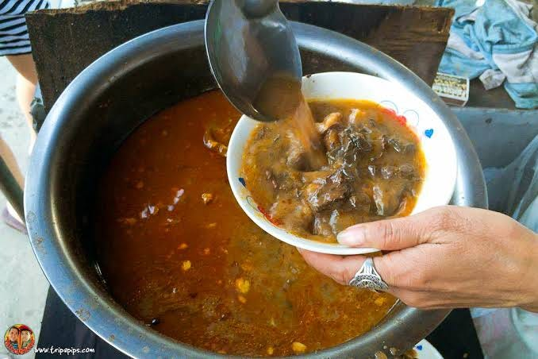
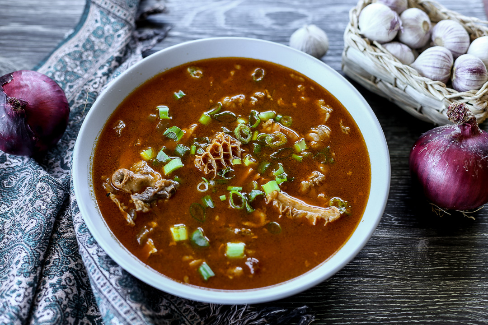
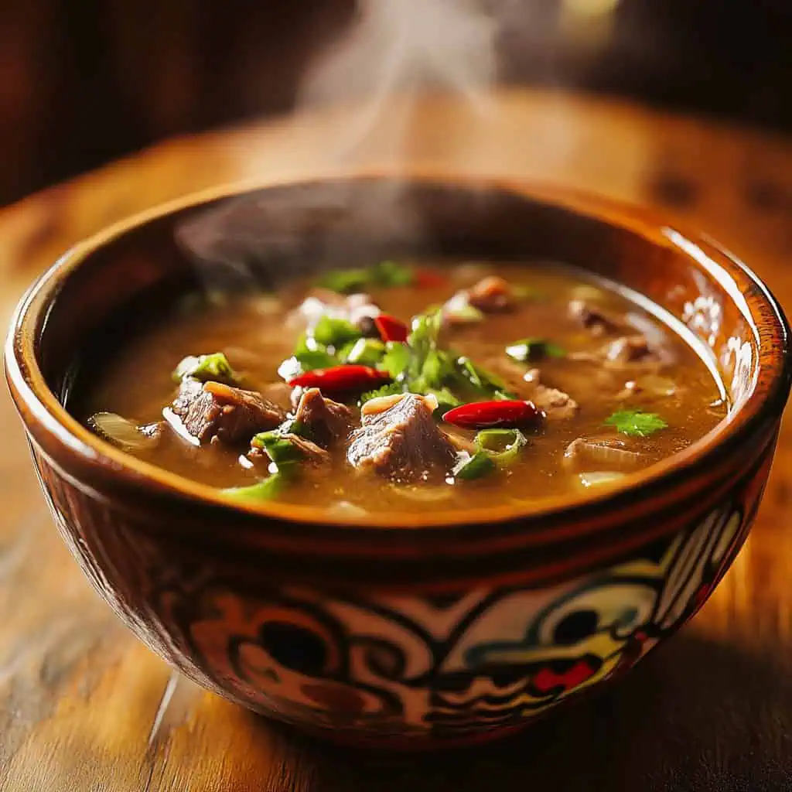

Kaleskes is a traditional stew from the province of Pangasinan in the Philippines, recognized as a hearty street or home-style dish made from beef innards and other offal. It is appreciated for its rich, savory broth and its connection to local culinary heritage.
Fun Facts
- The bitterness comes from bile, which is intentionally added
- Often paired with rice or eaten as pulutan (food with drinks)
- Often paired with rice or eaten as pulutan (food with drinks)
Preparation and Ingredients

Kaleskes typically uses boiled beef innards, such as tripe and intestines, simmered with bones and skin to create a thick, flavorful broth. Garlic, onion, salt, and pepper provide the base seasoning. The name derives from the Pangasinan word for “intestines.” Unlike other offal soups, it does not use bile, which gives it a milder flavor compared to similar Ilocano dishes.
Regional Variations

Some cooks enrich Kaleskes with vegetables or use pork instead of beef. Modern versions may include chili or fish sauce for added depth. Despite its humble origins, Kaleskes remains a celebrated representation of Pangasinan culinary creativity and resilience.
Cultural Significance

The dish is considered comfort food and is often consumed as a hangover cure or a late-night meal. It reflects Pangasinan’s resourceful use of whole animals and communal dining traditions. Kaleskes stalls are particularly popular in cities such as Dagupan and Mangaldan, where the dish symbolizes local identity and hospitality.
Locals say you’re not truly from Pangasinan until you’ve tried kaleskes. First-timers often hesitate because of the bitterness—but once they get used to it, it becomes a favorite.